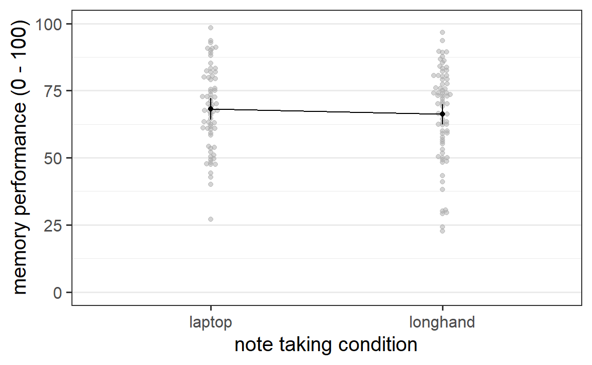

Chapter 3 The Standard Approach for One Independent Variable
In this chapter we are introducing the standard statistical approach for analysing experimental data with one independent variable (i.e., one factor). The simple case for this is a study comparing two experimental conditions on one dependent variable. We will exemplify the standard approach for this design using a recent and straightforward experiment.
3.1 Example Data: Note Taking Experiment
Heather Urry and 87 of her undergraduate and graduate students (Urry et al. 2021) (yes, all 87 students are co-authors!) compared the effectiveness of taking notes on a laptop versus longhand (i.e., pen and paper) for learning from lectures. 142 participants (which differed from the 88 authors) first viewed one of several 15 minutes lectures (TED talks) during which they were asked to take notes either on a laptop or with pen and paper. As this was a proper experiment, participants were randomly assigned to either the laptop (\(N = 68\)) or longhand condition (\(N = 74\)). After a 30 minutes delay, participants were quizzed on the content of the lecture. The answers from each participant were then independently rated from several raters (which agreed very strongly with each other) using a standardised scoring key resulting in one memory score per participant representing the percentage of information remembered ranging from 0 (= no memory) to 100 (= perfect memory).10 Figure 3.1 below shows the memory scores across both note taking conditions.
Figure 3.1: Distribution of memory scores from Urry et al. (2021) across the two note taking conditions.
In Figure 3.1, each black point shows the memory score of one participant so the full distribution of the data is visible. The shape of the distribution is also shown via a violin plot (i.e., the black outline around the points) to which we have added three lines representing three summary statistics of the data. From top to bottom these lines are the 75% quantile, the 50% quantile (i.e., the median), and the 25% quantile. The red points show the mean and the associated error bars show the standard error of the mean11. We see that the two means are quite similar, although the mean in the laptop condition is slightly larger, by 2.0 points (mean laptop = 68.2, mean longhand = 66.2).
3.2 The Logic of Inferential Statistics
The previous paragraph provide us with descriptive statistics describing the results in the experiment by Urry et al. (2021): There is a memory difference of 2.0 on the scale from 0 to 100 between the laptop and the longhand condition for the sample of 142 participants. However, as researchers we are usually not primarily interested what happens in our sample. What we would like to know if our results generalises to the population from which this sample is drawn. In this case, we would like to know whether there is a memory difference between note taking with a laptop or in longhand format for students (as this is roughly the population the sample is drawn from).
Going beyond the the present sample is the goal of inferential statistics. There are different inferential statistical approaches, and we are focussing on the most popular one, null hypothesis significance testing (NHST). We will describe NHST more thoroughly in the next chapter, but will already introduce its main ideas here. For NHST, the question of generalising from sample to population is about two different possible true states of the world: There either is no difference in conditions means in the population (i.e., there only is a mean difference in our sample due to chance) or there is a difference in the condition means in the population. To decide between these possibilities, we set up a statistical model for the data. This statistical model allows us to assess if there is no difference in the population – we call this possible state of the world the null hypothesis. More specifically, the statistical model allows us to test how compatible the data is with the null hypothesis of no difference. The test of the null hypothesis proceeds as follows: (1) We assume that the state of the world in which there is no difference in the population means is true. (2) Based on this assumption we calculate how likely it is to observe a difference as large as the one we have observed in our sample. (3) If the probability of observing a difference as large as the one we have is very small, we take this as evidence that the null hypothesis of no difference is not true – we reject the null hypothesis. (4) We act as if there were a difference in the population. In this case (i.e., we reject the null hypothesis and act as if there is a difference), we say our experimental manipulation has an effect.
As is clear from this description, the logic underlying inferential statistics using NHST is not trivial. To make it clearer, let us apply the logic to the example data. We want to know whether the observed mean memory difference between note taking with a laptop and note taking in long hand format in our sample generalises to the population of students that take note in either of these formats. To do so, we set up a statistical model for our data. This model allows us to test how compatible our data is with the null hypothesis that there is no mean memory difference in the population. Specifically, the model allows us to calculate the probability of obtaining a memory difference as large as the one we have observed assuming the there is no mean memory difference in the population. If our data is incompatible with the null hypothesis (i.e., it is unlikely to obtain a memory difference as large as the one we have observed if the null hypothesis were true), we reject the null hypothesis of no mean memory difference in the population. Because we reject the null hypothesis we then act as if there was a mean memory difference in the population. In other words, we then act as if the type of note taking had an effect on memory after lectures in the population.
Even though the logic of NHST is not necessarily intuitive, it is clearly helpful for researchers. After running an experiment we really would like to know if the difference observed in our experiment (i.e., in our sample) is meaningful in the sense that it generalises to the population from which we have sampled our participants. And in almost every actual experiment there is some mean difference between the condition (i.e., it is extreme unlikely that both conditions have exactly the same mean). Thus, we pretty much always face this question. NHST allows us to test whether the observed difference is compatible with a world in which there is no difference. If this is unlikely, we decide (i.e., act as if) there were a difference.
What we can see from spelling out the logic in detail is that there are quite a few inferential steps we have to make to get to what we want. We design experiments with the goal in mind to find a difference between the different experimental conditions. However, we then do not test this directly. Instead, we test the compatibility of the data with the converse of what we are actually interested in – the null hypothesis of no effect. If this test “fails” (i.e., shows that the data is likely incompatible with the null hypothesis) we then make two inferential steps. First we reject the null hypothesis and then we act as if there were a difference. Both of these inferential steps are not necessitated logically. What this means is that inferences based on NHST alone are never extremely strong.
NHST is the de facto standard procedure for inferential statistics across empirical sciences (i.e., not only in psychology and related disciplines). Understanding the logic of NHST will enable you to understand the majority of empirical papers and will also allow you to apply inferential statistics in your own research. Nevertheless, there exist a long list of popular criticisms of NHST (e.g., Rozeboom 1960; Meehl 1978; Cohen 1994; Nickerson 2000; Wagenmakers 2007). We will discuss these criticisms in more detail in later chapters, but for now it is important to realise that NHST does not allow to test, or prove, whether there is a mean difference in the population. The only thing NHST calculates is a probability of how compatible the data is with the null hypothesis. If this probability is low that does not necessarily mean that there is a difference. Likewise, if this probability is high that does not necessarily mean there is no difference. All inferences we draw based on NHST results are probabilistic in itself (i.e., can be false). So the most important rule when interpreting the results from NHST is to be humble. NHST never “proves” or “confirms” anything. Instead NHST results “suggest” or “indicate” certain interpretations. If we do not over-interpret results, but stay instead stay humble in our interpretations, we are unlikely to fall prey to the common (and often justifiable) criticisms of the NHST framework.
3.3 The Basic Statistical Model
To apply inferential statistics in the NHST framework to our data, we begin by setting up a statistical model to the data. A statistical model attempts to explain (or predict) the observed values of the dependent variable (DV) from the independent variable (IV).12 In the experimental context this means predicting our observed outcome, the DV, from the experimental manipulation, the IV.
The basic statistical model partitions the observed DV into three parts that: the overall mean, which for reasons that will become clear later is called the intercept, the effect of the IV, and the part of the data that cannot be explained by the model, the residuals. When summing these three parts together, they result in the observed value. In mathematical form we can express this as
\[\begin{equation} \text{DV} = \underbrace{\text{intercept}}_{\text{overall mean}} + \text{IV-effect} + \text{residual}. \tag{3.1} \end{equation}\](For those not used to reading mathematical expressions, the point at the end of the equation is simply a full stop that ends the sentence and has no mathematical meaning.) As someone without a mathematics background myself, I know that equations in a text are often more intimidating than immediately useful. Consequently, before moving on it makes sense to go through this equation in more detail. Furthermore, all statistical analyses discussed in this book are applications of Equation (3.1). This equation forms the foundation for the statistical analysis of experimental data and thus understanding it will unlock all analyses discussed in this book. Consequently, it makes sense to spend more time on it.
Let us consider the the variables in Equation (3.1) in more detail. When doing so, we also consider how many different possible values each variable can take on.13 The following Figure, a variant of Figure 3.1, shows the elements graphically and we explain them in the text just below.
Figure 3.2: Data from Urry et al. (2021) showing the overall mean (intercept, blue dotted line), the condition specific effects (difference between dashed red lines for the condition means and the blue line), and the residuals (grey lines from condition means to data points).
\(\text{DV}\): The dependent variable, DV, are the observed values, one for each observation/participant. For the example data this are all the 142 black data points shown in Figure 3.2. Thus, our statistical model tries to explain the individually observed values.
\(\text{intercept}\): The intercept represents the overall mean. Consequently, we only have one intercept (i.e., the intercept is the same for each observation). In experimental designs we define this as the mean of all condition means. For the example data the intercept is (68.2 + 66.2) / 2 = 67.2 and is shown as a blue dotted line in Figure 3.2.
\(\text{IV-effect}\): The IV-effect represents the effect of our independent variable which we define as the difference between the condition means and the intercept (i.e., the deviation of the condition means from the intercept). Thus, we always have as many different IV-effects as we have conditions. For the example data with only two conditions, we only have two different IV-effects, both of which with the same magnitude and only differ in sign, 1.0 for the laptop condition and -1.0 for the longhand condition. If we add these values to the intercept, we get the condition means. As we will discuss further below, this is the most relevant part for answering the statistical question of interest. In Figure 3.2, the red dashed line (and the red points) show the condition means, thus the condition effects are the differences between the blue line and the red lines.
\(\text{residual}\): The residuals are the idiosyncratic aspects of the data that are left unexplained by the statistical model. As the model only predicts the condition means (i.e., intercepts plus independent variable), these are the deviations of the individual observations from the condition means. Thus, as for the DV, we have as many residuals as we have values of the DV. In Figure 3.2, the residuals are shown as grey lines from the condition means to each data point. This is all the information (or variability in the data) our model cannot explain.
3.3.1 Model Predictions
A simplification of Equation (3.1) that makes it clearer what the statistical model predicts is obtained if we ignore the residuals for a moment. As a reminder, the residuals are the part of the data that remains unexplained. In other words, these represent all the idiosyncratic parts of the data independent of our manipulation (e.g., some participants have better memory than others independent of how they took notes). What remains from our statistical model if we ignore all idiosyncratic aspects are only the predictions based on our IV. In the case of experimental data, the IV is the experimental condition. Thus, what a statistical model actually predicts is the means of the experimental conditions. We can again formalise this as
\[\begin{equation} \hat{\text{DV}} = \text{intercept} + \text{IV-effect}. \tag{3.2} \end{equation}\]Here, the hat symbol (\(\hat{}\)) means predicted value. Thus in contrast to the actual DV above, we only have the predicted DV in this equation.
When performing statistical analyses it sometimes help to remind oneself that all a standard statistical model predicts are the condition means. We generally do not make predictions about individual participants or consider other factors that are not part of the model. We only predict, and are interested in, the condition means.
3.3.2 Statistical Model for the Example Data
Let us take a look at the first six participants and their values for all the variables in the basic statistical model to get a better understanding of Equation (3.1).
| pid | condition | overall | —– | intercept | iv_effect | prediction | residual |
|---|---|---|---|---|---|---|---|
| 1 | laptop | 65.8 | 67.2 | 1 | 68.2 | -2.4 | |
| 2 | longhand | 75.8 | 67.2 | -1 | 66.2 | 9.6 | |
| 4 | longhand | 50.0 | 67.2 | -1 | 66.2 | -16.2 | |
| 5 | laptop | 89.0 | 67.2 | 1 | 68.2 | 20.8 | |
| 6 | longhand | 75.6 | 67.2 | -1 | 66.2 | 9.4 | |
| 8 | longhand | 83.3 | 67.2 | -1 | 66.2 | 17.1 |
The first three columns show the data. pid is the participant identifier (id) column. As it is often the case for real data, some ids are missing (here 3 and 7) for various reasons (e.g., potential participants were interested in the study and received an id, but then did not finish or start the experiment) so the first 6 rows already go up to pid = 8. condition tells us in which note taking condition a participant was and overall is their memory score on the scale from 0 to 100 which serves as the DV in the statistical model (i.e., the left-hand side in Equation (3.1)).
The four right most columns contain the values of the variables on the right-hand side of Equation (3.1), the intercept, the iv_effect, and the residual. In addition, the prediction column shows the left-hand side of Equation (3.2). As described above, every observation (i.e., row) has a idiosyncratic DV and residual. We also see that all values share one intercept, and the IV-effect is condition specific. As a consequence, the prediction column (which is the sum of intercept and iv-effect) also has two values, one for each condition. Finally, we can see that the sum of the three values on the right-hand side of Equation (3.1) equals the observed value of the DV. For example, consider pid = 4. If we enter the values into Equation (3.1) we have
\[ 50.0 = 67.2 + (-1) + (-16.2). \]
From this example data we can also understand better what the residuals mean, they are the difference between the observed value and the predicted value, \(\text{residual} = \text{DV} - \hat{\text{DV}}\). Consider again pid = 4. Here we have
\[ -16.2 = 50- 66.2. \]
We can also see how the residual captures the idiosyncratic aspects of our data that cannot be explained by the condition means. For example, some participants – such as pid = 5 and pid = 8 – have large positive residuals indicating that they have good memory independent of their note taking condition. Likewise, pid = 4 has a large negative residual indicating comparatively worse memory (again independent of the note taking condition).
3.3.3 Understanding the Statistical Model
Now that we have described the parts of the statistical model we are almost ready to fit the model and interpret the output. Before doing so it makes sense to look at all the parts again individually and try to understand why we set up the statistical model in the way we do. Remember, our goal is to evaluate whether there is an effect of the experimental manipulation (i.e., a difference between the two note taking conditions) in the population from which the data is sampled. To do so, we set up a model that partitions the observed data into three parts, the intercept representing the overall mean, the condition specific effect (IV-effect) representing the difference of the condition means from the intercept, and the residuals representing the idiosyncratic part not explained by the model. The reason for doing so is that it allows us to zoom in on what matters for our statistical question, the condition specific effect. To answer the question if there is a difference between the conditions in the population, we can now focus on this part of the model. The overall level of performance captured in the intercept and the residuals can (for now) be ignored for this question. Consequently, the statistical test reported below is a statistical test of the condition effect. Thus, the reason for setting up the statistical model in this way is to make it easy to get an answer to the question that interests us: Is there an effect of the note taking manipulation/conditions on memory? To answer this question we only need to consider the condition effect.
3.4 Estimating the Statistical Model in R
3.4.1 Package and Data Setup
For the statistical analyses reported in this book we generally use the afex package (Singmann et al. 2021) in combination with the emmeans package (Lenth 2021). afex stands for “analysis of factorial experiments” and simplifies many of the things we want to do (full disclaimer: I am the main developer of afex). Most analyses can also be performed with different functions, but it is often easiest to use afex functions as they are developed particularly for cognitive and behavioural researchers working with experimental data. More specifically, afex functions provide the expected results for experimental data sets out-of-the-box without the need to change any settings (which is not true for the corresponding non-afex functions). emmeans stands for “estimated marginal means” and is the package we use once a statistical model is estimated to further investigate the results. afex and emmeans are fully integrated with each other which allows to test practically any hypotheses of interest with a combination of these two packages in a straight forward manner. We already introduce the interplay of these two packages here, and the next chapters will showcase the full power of this combination.
We also regular use functions from the tidyverse package (e.g., for plotting). tidyverse is a collection of packages developed mainly by RStudio and their head data scientist Hadley Wickham. A full introduction of the tidyverse is beyond the scope of the present book, interested readers are encouraged to read the introductory book, Wickham and Grolemund (2017), which is also available for free online.
We begin the analysis by loading the three packages first (use install.packages(c("afex", "emmeans", "tidyverse")) in case they are not yet installed). We also change the default ggplot2 theme using theme_set() to a nicer one.
library("afex")
library("emmeans")
library("tidyverse")
theme_set(theme_bw(base_size = 15) +
theme(legend.position="bottom",
panel.grid.major.x = element_blank()))The next step would be loading in the data. This is made easy here as the data from Urry et al. (2021) is part of afex, under the name laptop_urry. So we can load it with the data() function. We then also get an overview of the variables in this data set using str(), which returns the structure of a data.frame.
data("laptop_urry")
str(laptop_urry)
#> 'data.frame': 142 obs. of 6 variables:
#> $ pid : Factor w/ 142 levels "1","2","4","5",..: 1 2 3 4 5 6 7 8 9 10 ...
#> $ condition : Factor w/ 2 levels "laptop","longhand": 1 2 2 1 2 2 1 2 2 1 ...
#> $ talk : Factor w/ 5 levels "algorithms","ideas",..: 4 4 2 5 1 3 5 2 5 4 ...
#> $ overall : num 65.8 75.8 50 89 75.6 ...
#> $ factual : num 61.7 68.3 33.3 85.7 69.2 ...
#> $ conceptual: num 70 83.3 66.7 92.3 82.1 ...The str function shows six variables, three of which we have already mentioned above:
pid: participant identifier, afactorwith 142 levels, one for each participant.condition:factoridentifying which note taking condition a participant belongs to, with two levels,laptopandlonghand.talk: Afactoridentifying which TED talk a participant saw, with 5 level.overall: Numeric variable with participants’ overall memory performance on a scale from 0 (= no memory) to 100 (= perfect memory). This variable is calledoverallbecause it is the average of two separate memory performance scores given below.factual: Numeric variable with participants’ memory score for factual questions (ignored in this chapter).conceptual: Numeric variable with participants’ memory score for conceptual questions (analysed in the next chapter).
3.4.2 Estimating the Statistical Model
For estimating a basic statistical model using afex we can use the aov_car() function. The next code snippet show how to do so for the example data, when saving the output in object res1 .
res1 <- aov_car(overall ~ condition + Error(pid), laptop_urry)
#> Contrasts set to contr.sum for the following variables: conditionThe first argument to aov_car() is a formula specifying the statistical model, overall ~ condition + Error(pid). The second argument identifies the data.frame containing the data (i.e., all the variables appearing in the formula), laptop_urry. We can also see that calling aov_car() produces a status message informing us that contrasts are set to contr.sum for the IVs in the model. This message is only shown for information purposes and can be safely ignored (we want contr.sum as contrasts for our variables, but as this is not the default R behaviour a message is shown).
A formula in R is defined by the presence of the tilde-operator ~ and the main way for specifying statistical models. It allows specifying statistical models in a similar way to the mathematical formulation, specifically the prediction equation of the statistical model, Equation (3.2). Therefore, a formula provides a comparatively intuitive approach for specifying a statistical model. On the left hand side of the ~ we have the dependent variable, overall. On the right hand side we have the variables we want to use to predict the dependent variable.
In the present case, the right-hand side consists of two parts concatenated by a +, the independent variable condition and an Error() term with the participant identifier variable pid. Thus, there are two difference between the formula used here and the prediction Equation (3.2), the formula misses an explicit intercept and we have specified an Error() term that is missing in Equation (3.2). Let us address these two difference in turn. The intercept is not actually missing from this equation, but implicitly included. More specifically, an intercept is specified using a 1 in a formula. However, unless an intercept is explicitly suppressed – which can be done by including 0 in the formula (and which should only be done if there are very good statistical reason to do so; i.e., it makes very rarely sense) – it is always assumed to be part of the models. Consequently, including it explicitly produces equivalent results. The following code shows this by comparing the previous result without explicit intercept, res1 with an aov_car call with explicit intercept using the all.equal() function. This function can be used to compare arbitrary R objects and only returns TRUE if they are equal.
res1b <- aov_car(overall ~ 1 + condition + Error(pid), laptop_urry)
#> Contrasts set to contr.sum for the following variables: condition
all.equal(res1, res1b)
#> [1] TRUEThe Error() term is a mandatory part of the model formula when using aov_car() and is used to specify the participant identifier variable (i.e., pid in this case). For a simple example as the present one that seems unnecessary, but later in the book we will see why the requirement of the Error() term is useful.
Before looking at the results, let us quickly explain why the function for specifying models is called aov_car(). A regular statistical model such as the ones considered here that solely includes factors (i.e., categorical variables) as independent variables is also known as analysis of variance, which is usually shortened to ANOVA.14 The basic R function for ANOVA models is simply called aov(). However, aov() does not in all cases return the expected results for all types of ANOVA models considered in this book (i.e., in some situations aov() can return results that would be considered inappropriate, even when used carfeully). An alternative to aov() is the Anova() function from package car (Fox and Weisberg 2019) (where car stands for the book title, “Companion to Applied Regression”). Anova() always returns the expected and appropriate ANOVA results when used correctly. However, calling Anova() requires at least two function calls and can become tricky with more complicated models discussed in later chapters. aov_car() combines the simplicity of model specification of the aov() function with the appropriate statistical results from the Anova() function from the car package (i.e., aov_car() calls Anova() internally).
3.4.3 Interpreting the Results
We can now look at the results of our statistical model. For this, we simply call the object that contains the results res1 (we would get the same output when calling print(res1) or nice(res1)).
res1
#> Anova Table (Type 3 tests)
#>
#> Response: overall
#> Effect df MSE F ges p.value
#> 1 condition 1, 140 269.66 0.52 .004 .471
#> ---
#> Signif. codes: 0 '***' 0.001 '**' 0.01 '*' 0.05 '+' 0.1 ' ' 1The default aov_car() output is an “Anova Table” we will see throughout the book. We can also see that the results table contains “Type 3 tests,” but we will ignore this for now. The only other option, Type 2 tests, produces the same results for the example data. We will get back to the meaning of “type of test” in later chapters when it makes a difference and ignore this part until then.
The next line of the results table is only reference information. We see that the response variable, which we also know as DV, is overall, just as we intended.
We then get a table of effects, which in this case only has one row, the effect of condition. This row contains all the information for our null hypothesis significance test (NHST) for the condition effect. The most important column in this output is the last column, p.value, or \(p\)-value. The \(p\)-value in this column is the main results of NHST and allows us to judge the compatibility of the data with the null hypothesis. It is the probability of obtaining a difference as extreme as observed when assuming that the null hypothesis of no difference is true. We see that in this case the \(p\)-value is not small, it is .47. Thus, the data are not incompatible with the null hypothesis and does not suggest that there is a memory difference between note taking with a laptop or in longhand format during lectures.
In general, researchers have adopted a significance level of .05. This means that if a \(p\)-value is smaller than .05 we treat this as evidence that the data is incompatible with the null hypothesis. In this case we would say the result is “significant.” However, as in our case the result is not smaller than .05 the result is “not significant” (I would avoid saying “insignificant” if the \(p\)-value is larger than .05, as “significant” is a technical term here). Thus, in the present case we do not reject the null hypothesis. The present data therefore do not provide evidence that the observed difference between the two modes of note taking generalises from the sample to the population according to NHST.
There are two further important columns whose results generally need to be reported, df, which stands for “degrees of freedom” (or df), and F. Understanding these columns in detail is beyond the scope of the present chapter, so we will only introduce them briefly. There are two degrees of freedom reported here, the first value, 1, is the numerator degree of freedom. It is always given by number of conditions minus 1. In the present case, we have two conditions, laptop and longhand, so the numerator df are 2 - 1 = 1. The second value is the denominator df, which are generally given by number of participants minus numerator df minus 1. Here we have 142 participants and therefore 142 - 1 - 1 = 140. In general, the larger the denominator df (i.e., the more participants we have) the better we can detect incompatibility with the null hypothesis (i.e., the easier it is to get small \(p\)-values). The \(F\)-value is a value expressing the observed incompatibility of the data with the null hypothesis. If \(F \leq 1\), the data are compatible with the null hypothesis. If \(F > 1\) the data are to some degree incompatible with the null hypothesis, with larger values indicating more incompatibility. The \(p\)-value is calculated from df and \(F\)-value. Consequently, the results are usually reported in the following way: \(F(1, 140) = 0.52\), \(p = .471\).
The next column that is important is ges which stands for generalised eta-squared, using the mathematical notation with Greek letters, \(\eta^2_G\). \(\eta^2_G\) is a standardised effect size that tells us something about the absolute magnitude of the observed effect (Olejnik and Algina 2003; Bakeman 2005). More specifically, \(\eta^2_G\) is supposed to be a measure of the proportion of variance in the DV that can be accounted for by a specific factor or IV in the model. For example, in the present case the condition effect is supposed to explain 0.4% of the variance in performance. In general, we should avoid standardised effect sizes such as \(\eta^2_G\) and instead report simple effect sizes. A simple effect size is expressed in units of our measured DV. For example, throughout this chapter we have mentioned that the observed difference in memory performance between both note taking conditions is 2.0 on the scale from 0 to 100. Here, the difference of 2.0 is a simple effect size. We will have to say more about effect sizes later, but as some journal editors or publishing guidelines require standardised effect sizes (which is statistically not a reasonable recommendation in my eyes) the default output contains it.
Finally, the default output contains the MSE column, which stands for “mean squared errors.” This column is mainly included for historical reasons. Traditionally, ANOVA models could relatively easily be calculated by hand or by calculator based on different variance terms (hence the name, analysis of variance). One of this term is the mean squared error from which, in combination with the residual squared error, the \(F\)-value can be calculated. In my undergrad studies I still learned to calculate ANOVA by hand, but this seems rather unnecessary nowadays. Hence, we will simply ignore this column. Interested reader can find a detailed explanation about the meaning of MSE for example in Howell (2013) or Baguley (2012).
One thing we note in the results table is that it does not contain any information about the intercept. However, as discussed above, the intercept is included in the model. The reason for omitting the intercept from the default output is that it is generally not of primary interest. In experimental research usually the main interest is in the effect of our independent variables, the effect of the experimental manipulation. The statistical model that separates the intercept (i.e., overall mean) from the condition effect allows to zoom in on the relevant part. In line with this, the default output of aov_car does the same. Later chapters will show how we can also get information about the intercept.
Estimating a statistical model with aov_car() provides us with the inferential statistical results, the null hypothesis tests for the IV-effects shown above. To get these, we just need to call the object containing the results at the R prompt (e.g., calling res1 in the present case). However, we can use the results object also for others parts of the statistical analyses, for data visualisation and follow-up analyses.
3.4.4 Data Visualisation
For data visualisation we can use the afex function afex_plot() which is built on top of the ggplot2 package. afex_plot() requires an estimated model object (e.g., as returned from aov_car()) and specifying which factors of the model we want to plot. In the present case, we only have one factor, condition, so we can only choose this one. Importantly, all factors passed to afex_plot() need to be passed as character strings (i.e., enclosed with "...").
afex_plot(res1, "condition")Figure 3.3: afex_plot() figure for data from Urry et al. (2021)
This simple call to afex_plot() produces already a rather good looking results figure combining the individual-level data points (in the background in grey) with the condition means (in black). Individual data points in the background that have the same or very similar values are displaced on the x-axis so they do not lie on top of each other. This is achieved through package ggbeeswarm (which needs to be installed once: install.packages("ggbeeswarm")). The plot also per default shows 95% confidence intervals of the means, which we will explain in detail in a later chapter.
As afex_plot() returns a ggplot2 plot object, we can manipulate the plot to make it nicer.
p1 <- afex_plot(res1, "condition")
p1 +
labs(x = "note taking condition", y = "memory performance (0 - 100)") +
coord_cartesian(ylim = c(0, 100)) +
geom_line(aes(group = 1))
For example, in the code snippet above we first save the plot object as p1 and then call a number of ggplot2 function on this plot object to alter the plot appearance (in ggplot2 graphical elements are added to a plot using +). Function labs() is used to change the axis labels, coord_cartesian() changes the extent of the y-axis (i.e., the plot now show the full possible range of memory performance score), and geom_line(aes(group = 1) adds a line connecting the two means. This figure could now be used in a results report or manuscript as is.
3.4.5 Follow-Up Analysis
Follow-up analysis refers to an inspection of the predicted condition means and their relationships. In the case of a single independent variable with two levels (e.g., laptop versus longhand) their is not much to investigate in this regard. We can nevertheless show the general procedure. For follow-up analyses we generally begin with function emmeans() from package emmeans (Lenth 2021). Function emmeans() then returns the estimated marginal means, which is a slightly complicated way of saying condition means, plus additional statistical information.
Similarly to afex_plot(), emmeans() requires an estimated model object as well as the specification of a factor in the model for which we want to get the condition means:
emmeans(res1, "condition")
#> condition emmean SE df lower.CL upper.CL
#> laptop 68.2 1.99 140 64.3 72.1
#> longhand 66.2 1.91 140 62.4 70.0
#>
#> Confidence level used: 0.95For now we only focus on the estimates means in column emmean and ignore the additional inferential statistical information in columns SE to upper.CL. We can see that the reported means match the means given in the text at the very beginning of the chapter, 3.1.
The power of emmeans is not only to provide the condition means, but it also allows us to perform calculation on the condition means. For example, in the case of a factor with two levels we can easily calculate the difference between the condition means as our simple effect size. For this, we can save the object returned by emmeans() and then call the pairs() function on this object which gives us all pairwise comparisons of conditions means of which there is only one in the present case (we would get the same results by combining both calls into one: pairs(emmeans(res1, "condition"))):
em1 <- emmeans(res1, "condition")
pairs(em1)
#> contrast estimate SE df t.ratio p.value
#> laptop - longhand 1.99 2.76 140 0.722 0.4715The output shows a mean difference of 1.99 which slightly differs from the 2.0 reported above, which is slightly concerning. However, the results reported above are rounded to one decimal only. If we do so for the present results, we also get an estimated difference of 2.0 (we will not explain this code in detail here):
em1 %>%
pairs() %>%
as.data.frame() %>%
format(digits = 1, nsmall = 1)
#> contrast estimate SE df t.ratio p.value
#> 1 laptop - longhand 2.0 2.8 140.0 0.7 0.53.5 Summary
The goal of this chapter was to introduce the standard statistical approach for analysing experimental data with one independent variable with two levels – an experiment with two conditions. Practically every time when we run such an experiment, we observe that there is some mean difference in the dependent variable between the two conditions. For our example data by Urry et al. (2021) there was a memory difference of 2.0 points between the two note taking conditions (laptop versus longhand) on the response scale from 0 to 100.
The important statistical question we then have is whether there is any evidence suggesting that the observed difference in our sample generalises to the population. The sample are the participants in our experiment and the population refers to all possible participants that could have been sampled. For Urry et al. (2021) this population could be loosely described as students taking notes or maybe more precisely undergraduate students at research intensive (R1) US universities. The question we would like to get a statistical answer to is: Should we believe that there generally is a memory difference between note taking with a laptop versus longhand? To answer this question we need inferential statistics.
The inferential statistical approach we are using is called null hypothesis significance testing or NHST. However, NHST does not directly address the question whether there is evidence for a difference in the population. Instead, NHST tests the compatibility of the data with the null hypothesis – the assumption that there is no difference between the condition in the population. The most important result from NHST is the \(p\)-value. The \(p\)-value is a measure of the compatibility of the data with the null hypothesis; it is the probability of obtaining a results as extreme as observed assuming the null hypothesis is true. If the \(p\)-value is smaller than .05 we reject the null hypothesis that there is no difference. In this case we decide that there is evidence for a difference (although this does not follow with logical necessity).
To apply NHST to the data we set up a statistical model that observed partitions the data into three parts (Equation (3.1)): the intercept representing the overall mean, the effect of the independent variable (i.e., the difference of the condition means from the intercept), and the residuals representing the idiosyncratic aspects not explained by the other parts of the model. This partitioning allows us to zoom in on the part of the data that we are interested in, the effect of our independent variable, the experimental manipulation.
To estimate a statistical model to the data we used function aov_car() from the afex package. aov_car() allows us to specify the statistical model using a formula of the form dv ~ iv + Error(pid) (where pid refers to the variable in the data with the participant identifier) mimicking the mathematical specification of the statistical model. The default output returns an ANOVA table which provides a null hypothesis significance test for our iv, the independent variable. The returned table is called an ANOVA table because statistical models that only contain factors are called analysis of variance or ANOVA. In the present case, the statistical model only has a single factor, note taking condition, with two levels, laptop versus longhand. In the returned ANOVA table, we do not only have the \(p\)-value for our experimental factor, but additional inferential statistical information such as the degrees of freedom, df, and the \(F\)-value.
We can also use the object returned from aov_car() for plotting using function afex_plot(). This function produces a plot combining the individual-level data points with the condition means. This provides a comprehensive display of the data of the experiment. As the function returns a ggplot2 object, this plot can be be easily modified to create a figure that can be used in a results report.
We can also use the object returned from aov_car for follow-up analyses using emmeans. With emmeans we can easily obtain the condition means (or estimated marginal means) on the dependent variable. Based on these condition means we can calculate the observed effect size (i.e., the mean difference).
Applying the statistical model to the data from Urry et al. (2021) showed a non significant difference, \(F(1, 140) = 0.52\), \(p = .471\). This suggests that there is no difference in memory performance after watching a talk and taking notes with either a laptop or in longhand format.
References
Urry et al. transformed the memory scores before their analysis based on an earlier paper doing the same. However, the memory scores from 0 to 100 are easier to understand than the transformed scores. As the results are qualitatively the same for both approaches, we use the untransformed memory scores here.↩︎
We will discuss standard errors in detail in the coming chapters. Until then, it is enough to understand the standard error as a representation of the statistical precision of the mean. In other words, the larger the standard error, the less sure we are about the “true” value of the mean (again, what we mean with true will be discussed later).↩︎
All statistical models considered in this book are solely based on observable quantities. We predict the DV (i.e., what we measure) from the IVs we either manipulate (in experiments) or observe/measure (for non-experimental DVs). However, statistical models can also use non-observable (latent) quantities to explain the DV. Popular examples in psychology are structural equation models (e.g., Kline 2015) or cognitive models (e.g., Lee and Wagenmakers 2013).↩︎
Equation (3.1) is displayed in simplified and not fully correct form. Mathematically correct would be that either each variable (i.e., \(\text{DV}\), \(\text{intercept}\), \(\text{IV-effect}\), and \(\text{residual}\)) has an index, such as \(i\), that goes from 1 to \(N\) (where \(N\) is the total number of observations) or that each variables is a vector (i.e., holds multiple values) of length \(N\).↩︎
Describing in detail why statistical models with solely factors as IVs are called analysis of variance even though we are comparing condition means and not variances is beyond the scope of the present work. The short answer is that this has historical reasons. One can calculate the statistical tests in these models by hand by comparing different variance terms. For a full explanations, interested readers are encouraged to read the excellent explanation in Howell (2013) (any edition of the book should have it).↩︎